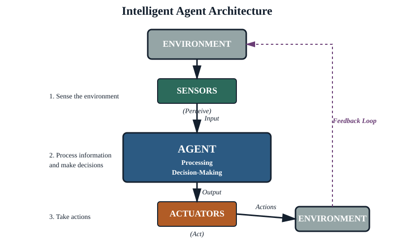
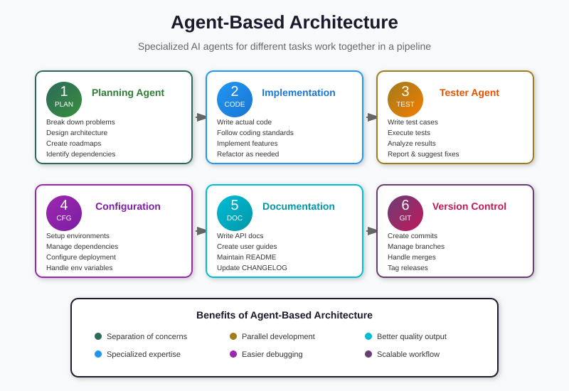
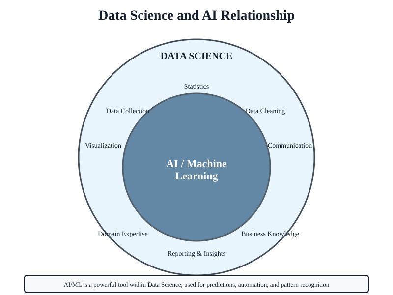

AI is already in your day
You have used AI several times today and may not have noticed. The directions your phone gave you this morning came from a search algorithm planning the fastest route across a graph of streets, factoring in live traffic, road closures, and how many minutes the car ahead is delaying you. The voice assistant that turned off the lights last night converted the sound waves of your voice into text, figured out which device you meant, and called the right system. The unread emails your inbox quietly moved to "Promotions" were classified by a model that has read billions of marketing messages. The "Memories" album your phone offered last week was assembled by a face-recognition model that grouped photos of the same people, even when those people were five years younger and fifty pounds heavier.
None of these felt like AI when they happened. That's the point. The most useful AI does not announce itself; it disappears into the work it is doing. Today, if you have a smartphone and a budget meeting, you are already an AI user. The question this course answers is whether you are a deliberate one.
For leaders
When someone proposes adding AI to a process, the right first question is rarely "Is this AI?" — the answer is almost always yes. The right question is "What kind of AI, and is it the right one for this job?" Today's content gives you the categories you need to ask that question intelligently.
The four perspectives on AI
The textbook by Stuart Russell and Peter Norvig — Artificial Intelligence: A Modern Approach — organizes the entire field around a 2×2 grid. AI systems are trying to do one of four things:

Acting humanly — the Turing test
Can a machine fool a person into thinking they're talking to another person? This is the original AI question. ChatGPT and Claude live here when they hold a conversation that feels like talking to a colleague. Notice the goal isn't to be correct — it's to be indistinguishable.
Thinking humanly — cognitive modeling
Can we build a machine whose internal process resembles a human's thought process? This is the territory of cognitive science. Less common in industry but underlies a lot of human-computer interaction research.
Thinking rationally — logic and proofs
Reasoning from premises to correct conclusions, the way a careful lawyer or mathematician would. This is where "expert systems" and the knowledge-based systems we'll meet on Day 4 sit. Strict, explainable, but brittle when reality breaks the rules.
Acting rationally — the rational agent
Whatever the inner process, the system acts in a way that maximizes its chance of achieving its goals. This is the dominant view in modern AI. A self-driving car does not need to think like a human driver; it needs to drive well. This is the lens we'll use most.
Why this grid matters to you
When a vendor pitches "AI," ask which quadrant. A chatbot trying to feel human (acting humanly) is a very different thing from a fraud-detection system trying to maximize true positives (acting rationally) — and they fail in very different ways.
Six eras of AI history
AI is older than most people think and has been declared dead at least twice. Knowing the cycle is useful: it teaches you which kinds of progress have stuck, which were hype, and what to watch for in today's wave.

1950s — The dream begins
Alan Turing asks "Can machines think?" in 1950. The Dartmouth workshop in 1956 names the field "Artificial Intelligence." Early programs play checkers, solve logic puzzles, and prove geometry theorems. Optimism is enormous: a 1965 paper predicts machines will be doing any work a human can do within twenty years.
1970s — The first AI winter
The grand promises don't materialize. Funding evaporates. Researchers learn the hard way that what looks easy to a child (recognizing a face) is much harder than what looks hard to an adult (proving a theorem). This is called Moravec's paradox, and it still bites.
1980s — Expert systems
A practical comeback. Companies build "expert systems" that encode the rules a specialist uses — medical diagnosis, oil exploration, equipment configuration. These are the ancestors of today's knowledge-based systems (Day 4). They worked, narrowly. They scaled badly.
Late 1980s and 1990s — The second AI winter
Expert systems prove brittle. The hype cycle collapses again. AI quietly survives in academia and in narrow industrial applications. Meanwhile, the foundations of modern machine learning are being laid: neural networks, statistical methods, support vector machines.
2000s — Data and statistics quietly win
The Internet floods the world with data. Search engines, recommendation systems, and spam filters start working remarkably well using simple statistical methods on huge datasets. AI succeeds without being called AI. Companies like Google and Amazon are essentially built on this generation of techniques.
2010s — The deep learning revolution
In 2012 a neural network called AlexNet wins the ImageNet competition by a huge margin, and everything changes. Deep learning — massive neural networks trained on massive datasets with massive amounts of compute — starts beating every previous approach in image recognition, speech, translation, and game playing.
2020s — Generative AI
GPT-3 in 2020, ChatGPT in 2022. Models that can generate fluent text, working code, and believable images on demand. We will return to how this generation works in Day 4. For now: the present wave is real, but the question is which parts of it stick.
Pattern across the eras
Every wave of AI has been over-promised and then partially delivered. The progress is real but rarely as fast or as complete as the loudest voices claim. As a leader, your job is to find the durable middle — the part that has actually stuck — and ignore the parts that are next year's winter.
Intelligent agents
The dominant modern frame for AI is the intelligent agent: something that perceives its environment, processes what it perceives, takes actions, and (sometimes) learns from the results. Four ingredients:

- Perceive — sensors, cameras, network inputs, user messages.
- Process — rules, search, statistical models, neural networks — whatever turns input into a decision.
- Act — actuators, screen output, sent messages, written files, physical motors.
- Learn — adjust the process based on outcomes (optional but increasingly common).
Four agents, from very simple to very complex

1. A thermostat
Perceives temperature. Acts: turn heater on or off. No memory, no learning. Reflexes only. This is a perfectly good agent for the job it has.
2. A spam filter
Perceives the words and metadata of an incoming email. Process is a statistical model trained on millions of past emails. Acts by routing the email. Learns when you mark something as spam or "not spam."
3. A recommendation system
Perceives what you have watched, paused, abandoned, and rated. Models a representation of your taste. Acts by ordering the homepage. Learns continuously from how you respond. The same agent pattern, with much richer perception, processing, and action.
4. A self-driving car
Perceives via cameras, radar, lidar, GPS, and inertial sensors at thousands of frames per second. Processes through several stacked models — one for object detection, one for tracking, one for prediction, one for planning. Acts on the steering, throttle, and brakes. Learns offline from billions of miles of fleet data. Same four ingredients, much harder problem.
The leader's takeaway
Whenever someone says "we're using AI to do X," try to identify the four ingredients. What does it perceive? How does it process? What does it act on? Does it learn, or is it frozen at deployment? Most failed AI projects fail at one of these four points — usually perception (bad data) or learning (drift after deployment).
The AI landscape
"AI" is a parent term covering many subfields. You don't need to be an expert in any of them, but you need the names so vendor pitches stop sounding alike.
| Subfield | What it does | Where you've seen it |
|---|---|---|
| Machine Learning (ML) | Find patterns in data, make predictions | Spam filters, fraud detection, demand forecasting |
| Computer Vision (CV) | Make sense of images and video | Face unlock, license-plate readers, medical imaging |
| Natural Language Processing (NLP) | Read, write, and understand text | Translation, sentiment analysis, ChatGPT |
| Speech | Transcribe audio and synthesize voices | Voice assistants, captions, dictation |
| Robotics | Move and act in the physical world | Warehouse robots, surgical assistance, drones |
| Planning & Scheduling | Find good sequences of actions | Route optimization, manufacturing schedules, calendar AI |
| Knowledge Representation | Encode rules and facts so machines can reason | Medical decision support, legal reasoning, access control |
| Generative AI | Produce new text, images, audio, video, code | ChatGPT, Midjourney, code completion |
Most useful systems combine several of these. A document-processing AI might use computer vision to read scanned PDFs, NLP to extract clauses, and a knowledge-based system to flag policy violations. When a proposal claims to be "AI-powered," ask which of these subfields are actually doing the work.
AI ↔ Data Science
AI and data science overlap heavily but are not the same. The simplest distinction:
Data Science
Turning raw data into understanding. Cleaning, exploring, visualizing, building statistical models that explain what happened and why.
Artificial Intelligence
Turning data (and other inputs) into action. Building agents that decide and do things in the real world — sometimes invisibly, sometimes visibly.

In practice, machine learning sits in the overlap. A demand-forecasting model is both data science (it explains historical demand) and AI (it acts on tomorrow's purchasing decisions). A pure Excel-style sales report is data science but not AI. A rule-based access-control system is AI but not data science.
For a leader: when a team asks for "data scientists" they often need analysts and modelers; when they ask for "AI engineers" they often need people who deploy and maintain models in production. These are related but distinct skill sets, and budgeting for one when you needed the other is a common failure mode.
Using AI tools today
The conceptual model above is necessary but not sufficient. The other half of Day 1 is hands-on: you should leave more capable at your daily work than you arrived. The four general-purpose AI tools every leader should be able to use:
ChatGPT (OpenAI)
The most widely-used. Strong at general writing, brainstorming, summarization. Has tools for web search, image generation, and running code. Default choice when you want a conversation that "just works."
Claude (Anthropic)
Strong at long, careful documents and at following complex instructions precisely. Excels when you need to feed it an entire policy or report and ask nuanced questions about it. Tends toward the cautious end — will refuse fewer things than it used to but more than ChatGPT.
Gemini (Google)
Tightly integrated with Google services — Workspace, Search, Maps. If your day already runs in Google Docs and Gmail, Gemini's biggest advantage is being right there.
Copilot (Microsoft)
The same: tight integration with Microsoft 365 — Word, Excel, PowerPoint, Outlook. If your day runs in Office, Copilot is the lowest-friction path. There is also a "GitHub Copilot" variant for software developers; that's a different product.
Practical reference
For a fuller side-by-side — including which tools are smartphone-native, which require paid plans, and which respect specific privacy settings — see the AI Smartphone Apps Guide.
Prompt patterns that work
The single biggest determinant of how useful these tools are to you is how you ask. A few patterns that consistently produce better output:
1. Set the role and the audience
"Act as a budget analyst preparing a one-page memo for a director who has 5 minutes to read it."
Models behave differently depending on who they think they are talking to and as. Saying so up front replaces a paragraph of unstated assumptions.
2. Show, don't tell
"Here are two memos I've written before that I'm happy with: [paste]. Match this style for the new memo about [topic]."
A model with one good example will usually outperform a model with three pages of style guidelines. Examples are denser than rules.
3. Ask for the structure first
"Don't write the memo yet. First propose an outline with three headings and one sentence per heading. I'll tell you which to expand."
Cheap to course-correct an outline. Expensive to course-correct three pages of prose.
4. Push back when you disagree
"Your draft assumes the audience knows what NDMO is. They don't. Rewrite the second paragraph assuming a non-technical reader."
These tools are extraordinarily responsive to feedback. The sooner you treat them like a junior colleague who needs direction (rather than a vending machine that produces a single output), the more useful they become.
5. Watch for confident wrongness
The single biggest failure mode of today's tools is producing fluent, confident text that is plausible-sounding but factually wrong — the phenomenon known as hallucination. We will treat this seriously in Day 4. For now: never paste a model's output into a document that will be read by someone you can't unembarrass yourself in front of, without checking the facts first.
What to take away
- AI is already woven into your day. The interesting question is not whether to use it but how to use it deliberately.
- "AI" covers four perspectives (acting/thinking × humanly/rationally) and many subfields. Ask which kind a proposal really means.
- Modern AI is best understood as intelligent agents with four parts: perceive, process, act, learn.
- The field has had two winters. Some of today's wave will stick. Some will not. Your job as a leader is to bet on the durable parts.
- You should be using ChatGPT, Claude, Gemini, or Copilot daily for the work that fits them — writing, summarizing, brainstorming, editing — with a cautious eye on hallucination.
Try a demo
To see two intelligent agents face off in a non-trivial task, watch the Baloot AI Arena — two AI players (Greedy vs. Strategic) play the classic Saudi card game. You can also play against the AI yourself. Notice how the four agent ingredients show up at every move.